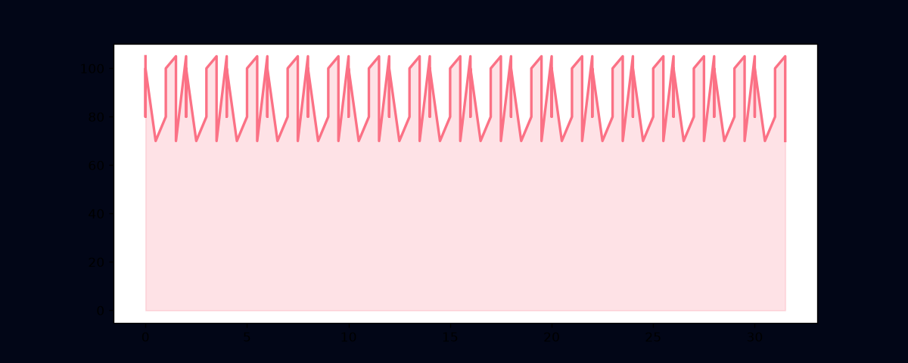

● Style 005: Fanfare Showband (Integrated)
A multi-voice, seamless, loop-aligned composition combining direct-event brass structures with a tight Dutch-style drumband snare rhythm.
Analysis & Properties
- Tempo: 132 BPM (March / Showband cadence)
- Key: Bb Major / G Minor center
- Harmonic Movement: Cyclic fifths-down (1 -> 4 -> 7 -> 3 -> 6 -> 2 -> 5 -> 1)
- Meter: 4/4 time, exact 8-bar loop boundaries (15,360 total ticks at 480 TPB)
- Ensemble Architecture:
- Trumpet (Lead): Syncopated eighth-note flourishes.
- Trombone (Mid): Warm harmony voicing driving core triads.
- Tuba (Bass): Diatonic fifth-stepping low pulse.
- Drumband Snare: Steady military rolls with dynamics accenting strong beats.
Audio Playback
Piano Roll
Volume/Velocity Dynamics
